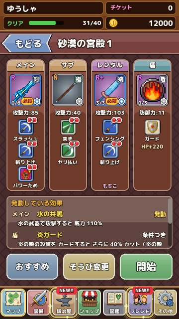

地上の攻略 中盤（砂漠のオアシス〜孤島）
オアシス・砂漠の宮殿・小島・漁師の里・孤島の敵と弱点、中ボスとボスの倒し方。 更新：2026-11-23
中盤の特徴
中盤の 5 エリア（砂漠のオアシス・砂漠の宮殿・小島・漁師の里・孤島）では、ひとつのエリアに属性のちがう敵がまじり始め、大きさ M の雑魚（ウルフ・ゴーレム・メイドなど）も普通に出てくるようになります。さらに、こちらの攻撃を防ぐ中ボスや、武器を封じるボス、宝箱の番人など、ただ殴るだけでは勝ちにくい相手が出てきます。
敵の表の「間隔」は、攻撃してくるまでのカウントの基本の数です（出てきた直後は 1〜2 多いことがあります）。中ボスとして出るときは、雑魚のときより 1 短くなります。弱点の武器はダメージ 1.5 倍・スタン値 5 倍、有利な属性はダメージ 2 倍です。
中盤からは、エリアの敵の HP と攻撃力も一段と上がります。前半のように R の武器 1 本で押し切るのは難しくなるので、SR の武器を少しずつ増やし、鍛冶屋で強化と進化を進めながら進みましょう。
砂漠のオアシス
砂漠の中の水場で、3 つめのショップがあります。ガチャは 1 回 2,500 コインで、R が 62%、SR が 3% 出ます。雑魚は水の属性が中心ですが、ファビメスだけは炎の属性なので、風の武器一本やりだと少し苦労します。
| 敵 | 種族 | 属性 | 弱い武器 | 間隔 |
|---|---|---|---|---|
| プチタマ | ドラゴン | 水 | 槍 | 3 |
| けがわカブリ | カブリモノ | 水 | 槍 | 4 |
| ひんやりおばけ | ゴースト | 水 | 剣 | 3 |
| ファビメス | ファビット | 炎 | 槍 | 2 |
| ダイビングゴーレム | ゴーレム | 水 | 槌 | 5 |
中ボス：犬かきウルフ（ケモノ・水・槍が弱点）
ウルフの中ボスは 2 カウントごとに攻撃してくる手数の多い相手です。お供にダイビングゴーレムがつくと、硬い敵と速い敵を同時に相手にすることになるので、先に槍でウルフをスタンさせ、スタン中に倒しきるのがおすすめです。風の槍なら 2 倍のダメージです。
ボス：樹龍ワシャラス（ドラゴン・風・槍が弱点）
必殺技は緑の嵐「グリーンストーム」。属性は風で、弱点は槍、そして竜です。砂漠の遺跡群でもらったドラゴニルランス（炎・槍・ドラキラー）は、属性の有利で 2 倍、弱点の種類で 1.5 倍、竜への 150% がすべて重なる、まさにこのボス向けの 1 本です。
おすすめと初回クリアの品
雑魚用に風の槍、ゴーレム用に槌、ボス用に炎の槍。STAGE 5 を初めてクリアすると大樹棍ユグドラシル（SR・風・槌。最大 HP が 150% になる「ガイアハート」）がもらえます。HP が大きく増えるので、メインの武器にしておくと後のエリアの必殺技にも耐えやすくなります。漁師の里の中ボス（水の属性で槌が弱点）にもぴったりです。
砂漠の宮殿
砂漠の奥の宮殿で、建物の中の戦いは洞窟の景色になります（モグランシールドの効果が働きます）。出てくる敵はすべて光の属性なので、闇の武器ならどの敵にも 2 倍です。店はなく、STAGE 5 をクリアすると武器のかわりに風の宝玉が手に入ります。
| 敵 | 種族 | 属性 | 弱い武器 | 間隔 |
|---|---|---|---|---|
| ピカリン | ゴブリン | 光 | 剣 | 3 |
| キラっこ | プランこ | 光 | 剣 | 4 |
| ピカラビット | ファビット | 光 | 槍 | 2 |
| カミナリおやじ | おやじ | 光 | 槌 | 3 |
| 勇者カブリ | カブリモノ | 光 | 槍 | 4 |
| ライトゴーレム | ゴーレム | 光 | 槌 | 5 |
中ボス：光のパラディーナ（人間・光・槍が弱点）
アーケディア城のオージーンと同じ「ボスの盾」を持つ中ボスです。こちらのスキルのヒットの 40% を盾で受けて、ダメージを 70% 減らします。盾はスタン中・しびれ中には使えず、必殺技も防げません。槍でスタンを取ってから攻めるか、しびれる攻撃のスキルを持った武器で動きを止めるのが効果的です（状態異常のページ）。
ボス：光龍キラノス（ドラゴン・光・槍が弱点）
必殺技は雷を落とす「サンダーボルト」。光の属性で槍が弱点の竜なので、闇の槍がいちばんです。闇の槍がなければ、ドラキラーのドラゴニルランスでも十分に戦えます。中ボスもボスも槍が弱点なので、槍を 2 本用意しておくと、スタンを取る役と削る役を分けられます。

小島
海に浮かぶ小さな島です。雑魚は風の属性が多く、大きさ M のサバイバルウルフやふつうのメイドもまじります。ボスだけは水の属性なので、雑魚用とボス用で武器の属性を分ける必要があります。小島にはふつうの 5 つの STAGE のほかに、たからのチケットで入るたからの STAGE があります。
| 敵 | 種族 | 属性 | 弱い武器 | 間隔 |
|---|---|---|---|---|
| ミドリガメ | カメカメ | 風 | 槌 | 4 |
| プチッコリ | ドラゴン | 風 | 槍 | 3 |
| はっぱおばけ | ゴースト | 風 | 剣 | 3 |
| サバイバルウルフ | ケモノ | 風 | 槍 | 3 |
| ふつうのメイド | マーメイド | 無 | 剣 | 4 |
中ボス：森ガール（マーメイド・風・剣が弱点）
風の属性で剣が弱点です。炎の剣があれば一番ですが、なければ弱点の剣でスタンを取ることを優先しましょう。お供のサバイバルウルフは攻撃が重いので、ウルフがついたら先に倒すのが安全です。
ボス：水龍ピチャルス（ドラゴン・水・槍が弱点）
必殺技は泡の流れを吹きつける「アクアブレス」。水の属性で槍が弱点なので、風の槍が最適です。ドラゴニルランスは炎の属性なので、このボスには属性で損をします（水は炎に強い）。ここでは属性の合う槍に持ちかえましょう。
たからの STAGE と初回クリアの品
たからの STAGE は、ラッキーキャラ 2 体と雑魚 1 体の WAVE が 2 回、最後に宝箱の番人ミミッくんが出る 3 WAVE です。番人は必ず品を落とし、小島では R と SR が半分ずつです。STAGE 5 を初めてクリアすると水刀ガブノミ（SR・水・剣。攻撃の ST が 1 多くかかるかわりに威力 160% の「武神撃」）がもらえます。次の漁師の里と、後半の灼熱の洞窟には炎の属性で剣が弱点の敵がいるので、長く使える 1 本です。
漁師の里
西のはずれの漁村で、地上で最後のショップがあります。ガチャは 1 回 6,000 コインで SR が 15%。孤島をクリアすると 8,000 コインで SR 40%、灼熱の洞窟をクリアすると 12,000 コインで SR 70% に品ぞろえが上がります。雑魚は炎の属性が多く、闇のいたずらゴーストと無属性のファビキングがまじります。
| 敵 | 種族 | 属性 | 弱い武器 | 間隔 |
|---|---|---|---|---|
| ファビキング | ファビット | 無 | 槍 | 2 |
| ご機嫌おやじ | おやじ | 炎 | 槌 | 3 |
| プチトマト | ドラゴン | 炎 | 槍 | 3 |
| いたずらゴースト | ゴースト | 闇 | 剣 | 3 |
| 萌えメイド | マーメイド | 炎 | 剣 | 4 |
| 火吹きウルフ | ケモノ | 炎 | 槍 | 3 |
中ボス：ダイビングゴーレム（ゴーレム・水・槌が弱点）
オアシスでは雑魚だったゴーレムが、ここでは中ボスです。水の属性で槌が弱点なので、オアシスでもらった大樹棍ユグドラシル（風・槌）が、属性 2 倍・弱点 1.5 倍で刺さります。攻撃の間隔は 4 と長めなので、ガードに集中しやすい相手です。
ボス：ミミッくん（槌が弱点・無属性）
宝箱の姿をしたボスです。戦いが始まるとすぐ、カウントを待たずに「お肉ちょーだい！」とねだって必殺技を撃ってきます。この攻撃はガードでも防げますが、肉のボタンで受けても防げて、肉で受けると番人が喜び、宝箱をもう 1 つ落としてくれます。肉の数は減らないので、見えたら肉のボタンで受けましょう。弱点は槌で、属性は無なので、無属性の槌がいちばん効きます。
おすすめと初回クリアの品
雑魚用に水の武器（萌えメイドには水刀ガブノミ）、中ボス用に風の槌、ボス用に槌。STAGE 5 を初めてクリアすると巨人のアメちゃん（SR・炎・槌。倒したときのコインとアイテムのドロップ率が 150% になる「よくばり」）がもらえます。メインの武器に入れて戦うとコインと装備が集まりやすくなるので、お金をためたいときに便利です。

孤島
北西の海に浮かぶ島で、雑魚はほとんどが闇の属性です。光の武器ならほとんどの敵に 2 倍、しかも槍が弱点の敵が多いので、光の槍が大活躍します。小島と同じくたからの STAGE があり、こちらの番人は SR を 90% の確率で落とします。
| 敵 | 種族 | 属性 | 弱い武器 | 間隔 |
|---|---|---|---|---|
| プチャーク | ドラゴン | 闇 | 槍 | 3 |
| やみっこ | プランこ | 闇 | 剣 | 4 |
| サングラビット | ファビット | 闇 | 槍 | 2 |
| ドクロカブリ | カブリモノ | 闇 | 槍 | 4 |
| シャドウウルフ | ケモノ | 闇 | 槍 | 3 |
中ボス：自然のネイチャ（人間・風・剣が弱点）
雑魚とちがって風の属性で、剣が弱点です。炎の剣があれば 2 倍。闇の雑魚用の光の槍とは別に、炎か無属性の剣を 1 本入れておきましょう。
ボス：奇龍ナーゾキーモス（ドラゴン・闇・槍が弱点）
中盤でいちばん注意が必要なボスです。戦いが始まるとすぐに「武器封じ」を撃ってきて、今手に持っている武器の欄が 3 ターン使えなくなります。この最初の 1 発はガードできませんが、ダメージはありません。そのあとも必殺技の番に武器封じを撃ってきます。こちらはガードでダメージを減らせますが、封じを防げるのはミラクルガードだけです。
- 最初に封じられるのは手に持っている武器なので、槍を 2 本以上（できれば光の槍）入れておくと、封じられても弱点で攻め続けられます
- 封じられた欄は 3 ターンで戻ります。そのあいだはあせらずに、残りの武器でスタンを取ることに集中しましょう
- 必殺技の番が来たら、ミラクルガードをねらう価値があります。決まれば封じを防げます
たからの STAGE と初回クリアの品
孤島のたからの STAGE の番人は R 10%・SR 90% で品を落とします。SR を集めたいなら、チケットは孤島で使うのがおすすめです。STAGE 5 を初めてクリアするとティアマルト（SR・闇・剣。闇の武器で有利な属性の敵、つまり光の敵を攻撃すると威力がさらに 130% になる「闇ブースト」）がもらえます。次の氷の洞窟は光の敵ばかりで、ボスも剣が弱点です。続きは地上の攻略 終盤へ。

中盤を進めるときのコツ
- ひとつのエリアに属性のちがう敵がまじるので、メイン・サブ・3 本目で属性を分けると対応しやすくなります
- 大きさ M の雑魚（ウルフ・ゴーレム・メイド）は HP が多いので、弱点の武器でスタンを取ってから必殺技を当てると早く倒せます（必殺技のページ）
- たからのチケットはガチャを引くと 8% でもらえます。たまったら孤島で使い、SR の武器を増やしましょう
- 漁師の里のガチャは孤島のクリアで SR 40% になります。コインに余裕があれば、ここで装備を一気に入れかえるのもありです